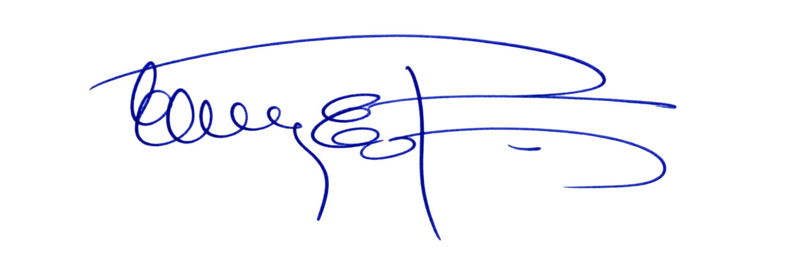

Guadalupe Elisabeth Gallardo Licenciatura en Tecnología Educativa Universidad Tecnológica Nacional · Facultad Regional Resistencia
E.E.T. N° 24 "Simón de Iriondo" 2.º año, 2.ª división · CSIPP Lengua y Literatura · Cohorte 2026
08 observaciones27 paneles de evidencias11 AGO — 08 SEP de 2026
01 / RECORRIDO DEL AULA
Los ocho encuentros
Cada registro reúne los datos de la clase, el desarrollo de las actividades, las producciones y sus fotografías. Seleccioná un encuentro para consultarlo.
Las imágenes se muestran con un tamaño adaptable. La ampliación y la descarga conservan los archivos originales. Los registros mantienen la identificación E01/E02 y los códigos consignados en la documentación de origen.
Diagnóstico o preimplementación
Observación N° 1
11 de agosto de 2026
Lectura y producción inicial
Datos del registro
Institución
EET N° 24 "Simón de Iriondo", Resistencia, Chaco
Espacio curricular
Lengua y Literatura
Curso
2.º año, 2.ª división – CSIPP
Docente
Edith Espindola
Tesista / observadora
Guadalupe Elisabeth Gallardo
Duración
80 minutos: dos módulos de 40 minutos
Modalidad
Observación no participante
Grupo
27 estudiantes; los registros 1 y 2 consignan 11 mujeres y 16 varones
Asistencia
27 presentes; curso completo, según el registro aportado.
Unidad y contenido
Unidad IV. Literatura hispanoamericana y argentina. Romanticismo social. El matadero, de Esteban Echeverría
Material de lectura
Fragmento de El matadero seleccionado por la docente. El registro no precisa un intervalo de páginas.
Se registran los niveles de comprensión literal, inferencial y crítica antes de la incorporación de inteligencia artificial.
Desarrollo de la clase
La docente presenta el Romanticismo social y contextualiza "El matadero" durante el gobierno de Rosas. Orienta la lectura, aclara vocabulario y recupera personajes y acontecimientos. Propone una actividad individual sobre la captura del joven, la divisa punzó, la violencia y la justificación del juez.
Producción de E01
E01 identifica la ausencia de la divisa y reconstruye la caída del caballo, el traslado a la casilla, el maltrato y la muerte. Relaciona la divisa con la oposición política y señala que los agresores tratan al joven como a un animal. La explicación "porque no quiere" no desarrolla el motivo político del rechazo. En su valoración, rechaza la idea de diversión por el daño y la muerte del personaje. Reconoce una posición del narrador favorable al unitario y la fundamenta de manera general.
Cierre
La producción presenta comprensión de los acontecimientos y relaciones políticas iniciales. El registro conserva como aspectos de seguimiento la ampliación de las explicaciones y la precisión de sus fundamentos. El caso de E01 se distingue del desempeño del grupo completo.
Evidencias documentales
Figura 1Consignas y producción escrita diagnóstica de E01
Nota. Actividad del 11 de agosto de 2026. La hoja presenta tres consignas y sus respuestas sobre la identificación del joven, la divisa y la violencia, y la justificación del juez. Fuente: material aportado por la tesista.
Fecha: 11 de agosto de 2026. Caso: E01. Fuente: material aportado por la tesista.
En la producción inicial de E01 se reconocen hechos y personajes de la escena, entre ellos la ausencia de la divisa, la captura y el maltrato del joven. La recuperación de acontecimientos muestra comprensión literal. La explicación breve del rechazo a la divisa deja menos desarrollada la relación entre la decisión del personaje y el enfrentamiento político. La valoración de la violencia aparece, aunque todavía requiere un vínculo más explícito con situaciones del relato. Esta producción constituye el punto de comparación del caso E01.
Firma de la observadora

Firma de la docente
Diagnóstico o preimplementación
Observación N° 2
14 de agosto de 2026
Imagen, relato y contexto político
Datos del registro
Institución
EET N° 24 "Simón de Iriondo", Resistencia, Chaco
Espacio curricular
Lengua y Literatura
Curso
2.º año, 2.ª división – CSIPP
Docente
Edith Espindola
Tesista / observadora
Guadalupe Elisabeth Gallardo
Duración
80 minutos: dos módulos de 40 minutos
Modalidad
Observación no participante
Grupo
27 estudiantes; los registros 1 y 2 consignan 11 mujeres y 16 varones
Asistencia
26 presentes y 1 ausente, según el registro aportado.
Unidad y contenido
Unidad IV. Literatura hispanoamericana y argentina. Romanticismo social. El matadero, de Esteban Echeverría
Material de lectura
Páginas 50 a 70 del libro digital e imagen de la página 52.
Se continúa el diagnóstico de comprensión lectora mediante seis preguntas sobre las páginas 50 a 70 y la imagen de la página 52.
Desarrollo de la actividad
La docente propone describir el matadero, reconocer personajes y funciones, relacionar las expresiones de apoyo al Restaurador con el poder e interpretar la divisa punzó. También solicita explicar el trato al joven y fundamentar el sentido político del espacio mediante dos situaciones. La consigna pide una resolución individual con palabras propias.
Producción de E01
E01 describe corrales, casilla, zanjón, barro y actividades del lugar. Diferencia las funciones de carniceros, achuradoras, muchachos y juez. Relaciona la divisa con la adhesión federal y explica el ataque como rechazo a un enemigo político. Interpreta el trato al joven como una negación de su dignidad. Fundamenta el sentido político del matadero con las expresiones de adhesión a la Federación y el ataque de Matasiete.
Cierre
La producción ya presenta interpretación política y ejemplos pertinentes en la etapa sin IA. La comparación con el 11 de agosto registra mayor desarrollo en esta tarea y considera las diferencias entre las consignas. Las fotografías documentan los escritos; no registran todas las intervenciones orales ni los apoyos individuales.
Evidencias documentales
Figura 2Imagen del matadero utilizada como apoyo de lectura
Nota. Imagen de la página 52 de la versión digital de El matadero empleada en la actividad del 14 de agosto. Se reproduce como material didáctico; no corresponde a una producción estudiantil. Fuente: material aportado por la tesista.
Fecha: 14 de agosto de 2026. Caso: Material didáctico. Fuente: material aportado por la tesista.
Figura 3aConsignas de la actividad diagnóstica del 14 de agosto
Nota. Sección a de la Figura 3. Consignas copiadas en la carpeta de E01: páginas 50 a 70 e imagen de la página 52. La formulación solicita respuestas individuales y fundamentadas. Fuente: material aportado por la tesista.
Fecha: 14 de agosto de 2026. Caso: E01. Fuente: material aportado por la tesista.
Figura 3bRespuestas de E01 a las seis consignas diagnósticas
Nota. Sección b de la Figura 3. Se identifican descripciones del espacio, relaciones entre poder y violencia e interpretaciones apoyadas en situaciones del relato. Fecha de la actividad: 14 de agosto de 2026. Fuente: material aportado por la tesista.
Fecha: 14 de agosto de 2026. Caso: E01. Fuente: material aportado por la tesista.
En las respuestas de E01 sobre la imagen y el relato se identifican actores, acciones y referencias al conflicto político. La relación entre la persecución del unitario y la pertenencia política muestra que existen inferencias antes de incorporar IA. El seguimiento posterior no parte, por lo tanto, de una ausencia de interpretación, sino de la necesidad de precisar explicaciones y fortalecer sus fundamentos.
Firma de la observadoraFirma de la docente
Implementación de la propuesta
Observación N° 3
18 de agosto de 2026
Interpretaciones y consulta a ChatGPT
Datos del registro
Institución
EET N° 24 "Simón de Iriondo", Resistencia, Chaco
Espacio curricular
Lengua y Literatura
Curso
2.º año, 2.ª división – CSIPP
Docente
Edith Espindola
Tesista / observadora
Guadalupe Elisabeth Gallardo
Duración
80 minutos: dos módulos de 40 minutos
Modalidad
Observación no participante
Grupo
27 estudiantes; los registros 1 y 2 consignan 11 mujeres y 16 varones
Asistencia
Cantidad de presentes no consignada en el registro aportado.
Unidad y contenido
Unidad IV. Literatura hispanoamericana y argentina. Romanticismo social. El matadero, de Esteban Echeverría
Material de lectura
Actividad N° 3 sobre el desenlace y la crítica política de El matadero. E01 consigna páginas 73 a 77; la copia de E02 consigna en una lectura de legibilidad limitada 75 a 77. Se conserva esta diferencia documental.
Se registra la primera actividad con ChatGPT y la relación entre consulta, interpretación y escritura en E01 y E02.
Desarrollo y mediación docente
La actividad solicita explicar el desenlace, completar un cuadro comparativo e interpretar la crítica política. También pide registrar una consulta a ChatGPT, resumir su respuesta y reelaborar la interpretación con fundamentos del cuento. Según el registro de campo, la docente recorre los bancos, lee las respuestas y solicita explicaciones con palabras propias y contraste con el relato. Las capturas muestran una computadora y el envío del enlace del libro digital.
Producción y consulta de E01
E01 reconstruye el desenlace y compara posiciones políticas y actitudes ante la violencia. Desarrolla una interpretación sobre abuso de autoridad e intolerancia. Consulta por la crítica a los federales y el significado político del matadero. El escrito y la respuesta de ChatGPT presentan ideas próximas. La continuación manuscrita no explicita todos los cambios ni incorpora una cita precisa.
Producción y consulta de E02
E02 compara a los personajes y relaciona el poder con el daño a quienes sostienen otras ideas. Consulta por qué el juez no castiga a los agresores. En "Mi reinterpretación", explica la responsabilidad de la autoridad frente a la violencia. La referencia a su opinión inicial aparece dentro de esa reconstrucción retrospectiva; no se conserva como una respuesta previa independiente.
Cierre
Se documentan interpretaciones asistidas y mediación docente. La fundamentación textual precisa permanece como aspecto de seguimiento. Los registros de E01 y E02 se mantienen separados; la respuesta de la herramienta se distingue de la comprensión del estudiante.
Evidencias documentales
Figura 4aConsignas, desenlace y cuadro comparativo de E01
Nota. Sección a de la Figura 4. Actividad N° 3 del 18 de agosto: consignas, reconstrucción del desenlace y comparación del joven unitario con los federales. Fuente: material aportado por la tesista.
Fecha: 18 de agosto de 2026. Caso: E01. Fuente: material aportado por la tesista.
Figura 4bInterpretación escrita de E01 sobre la crítica política
Nota. Sección b de la Figura 4. Continuación de la producción del 18 de agosto. El fragmento desarrolla la violencia y la imposición de autoridad; por sí solo no permite verificar todos los componentes solicitados en la consigna 3. Fuente: material aportado por la tesista.
Fecha: 18 de agosto de 2026. Caso: E01. Fuente: material aportado por la tesista.
Figura 5aInicio de la conversación y presentación del libro digital
Nota. Sección a de la Figura 5. Se observa el envío del enlace del libro a ChatGPT. La asociación con E01 y con el encuentro del 18 de agosto procede de la identificación aportada por la tesista. Fuente: material aportado por la tesista.
Fecha: 18 de agosto de 2026. Caso: E01. Fuente: material aportado por la tesista.
Figura 5bConsulta de E01 sobre la crítica política y el simbolismo
Nota. Sección b de la Figura 5. La pregunta consulta por la crítica a los federales y la representación política del matadero. La respuesta de ChatGPT se distingue de la elaboración del estudiante. Se omiten nombres personales en la transcripción analítica. Fuente: material aportado por la tesista.
Fecha: 18 de agosto de 2026. Caso: E01. Fuente: material aportado por la tesista.
Figura 6aConsignas y respuesta de E02 sobre el desenlace
Nota. Sección a de la Figura 6. Actividad del 18 de agosto de 2026. La fotografía presenta las consignas y la respuesta 1; parte del margen derecho está fuera del encuadre original. Fuente: material aportado por la tesista.
Fecha: 18 de agosto de 2026. Caso: E02. Fuente: material aportado por la tesista.
Figura 6bCuadro comparativo y resumen de la respuesta de ChatGPT de E02
Nota. Sección b de la Figura 6. Se observa la comparación de personajes, una interpretación de la crítica política y el resumen de la explicación de ChatGPT sobre el juez. Fuente: material aportado por la tesista.
Fecha: 18 de agosto de 2026. Caso: E02. Fuente: material aportado por la tesista.
Figura 6cReinterpretación de E02 después de la consulta
Nota. Sección c de la Figura 6. La toma incluye "Mi reinterpretación", ausente en la sección b. El antes se conoce por el relato retrospectivo del estudiante y no por una respuesta previa independiente. Fuente: material aportado por la tesista.
Fecha: 18 de agosto de 2026. Caso: E02. Fuente: material aportado por la tesista.
Figura 7Consulta de E02 sobre la responsabilidad del juez
Nota. Consulta vinculada con la Figura 6: por qué el juez no castiga a quienes maltrataron al unitario. La respuesta generada explica su adhesión política y la tolerancia de la violencia. Fuente: material aportado por la tesista.
Fecha: 18 de agosto de 2026. Caso: E02. Fuente: material aportado por la tesista.
La secuencia documenta la consigna sobre el juez y la crítica política, la consulta a ChatGPT y la producción del estudiante. La respuesta de la herramienta constituye un material de contraste, no una demostración de comprensión por sí misma. En E01 y E02 se examina qué información sobre los hechos se recupera, cómo se explica la responsabilidad de la autoridad y qué apoyo textual se aporta. La comparación distingue las ideas efectivamente escritas antes y después de la consulta de las opiniones iniciales relatadas con posterioridad.
Firma de la observadoraFirma de la docente
Implementación de la propuesta
Observación N° 4
25 de agosto de 2026
Corrección individual y reescritura
Datos del registro
Institución
EET N° 24 "Simón de Iriondo", Resistencia, Chaco
Espacio curricular
Lengua y Literatura
Curso
2.º año, 2.ª división – CSIPP
Docente
Edith Espindola
Tesista / observadora
Guadalupe Elisabeth Gallardo
Duración
80 minutos: dos módulos de 40 minutos
Modalidad
Observación no participante
Grupo
27 estudiantes; los registros 1 y 2 consignan 11 mujeres y 16 varones
Asistencia
Cantidad de presentes no consignada en el registro aportado.
Unidad y contenido
Unidad IV. Literatura hispanoamericana y argentina. Romanticismo social. El matadero, de Esteban Echeverría
Material de lectura
Revisión de la Actividad N° 3 del 18 de agosto. En la reelaboración de E01 se identifica una cita como página 70, pendiente de cotejo.
Se registra la revisión de la actividad del 18 de agosto y la respuesta de E01 a las orientaciones docentes.
Desarrollo de la clase
La docente controla las carpetas, realiza devoluciones y solicita ajustes, según el registro de la observadora. Las fotografías muestran dos orientaciones en rojo: ampliar la responsabilidad del juez y fundamentar mediante una cita, su página y una explicación. La asociación de estas marcas con el 25 de agosto procede del registro de campo; las marcas no incluyen una fecha independiente.
Ajuste de E01
En la hoja "Ajuste de actividad", E01 explica que el juez permite la violencia y minimiza sus consecuencias. Relaciona la captura, los insultos y el sometimiento del joven con la imposición del poder político. Incorpora un fragmento que presenta como cita de la página 70 y comenta su relación con la violencia y el autoritarismo. El material no incluye un cotejo documental de esa transcripción y su página.
Cierre
La revisión desarrolla la responsabilidad del juez e incorpora una cita comentada. El antecedente del 14 de agosto ya presenta fundamentos mediante situaciones. Los cambios se producen en una revisión acompañada, con relectura y trabajo previo con ChatGPT. El material no registra una revisión de E02 en esta fecha ni permite aislar el aporte de la IA.
Evidencias documentales
Figura 8aCorrección manuscrita sobre la responsabilidad del juez
Nota. Fotografía original de la actividad del 18 de agosto de 2026 con una orientación manuscrita de la docente sobre la responsabilidad del juez. La intervención se sitúa el 25 de agosto según el registro de observación. Caso E01. Fuente: fotografía aportada por la tesista.
Fecha: 25 de agosto de 2026. Caso: E01. Fuente: material aportado por la tesista.
Figura 8bCorrección manuscrita y ajuste de actividad del 25 de agosto
Nota. Fotografía original con la orientación docente para incorporar una cita, indicar la página y explicar su pertinencia. Incluye la producción "Ajuste de actividad", fechada el 25 de agosto de 2026. La parte inferior de la explicación queda fuera del encuadre. Caso E01. Fuente: fotografía aportada por la tesista.
Fecha: 25 de agosto de 2026. Caso: E01. Fuente: material aportado por la tesista.
Figura 8cProducción revisada de E01 del 25 de agosto
Nota. Sección c de la Figura 8. Producción titulada "Ajuste de actividad", fechada el 25 de agosto de 2026. Incluye tres respuestas y un fragmento identificado como página 70, cuya transcripción y paginación no cuentan con cotejo incorporado con la edición utilizada. Fuente: material aportado por la tesista.
Fecha: 25 de agosto de 2026. Caso: E01. Fuente: material aportado por la tesista.
La docente solicita explicar qué demuestra la reacción del juez y su responsabilidad, incorporar una situación concreta que fundamente la crítica política y buscar una cita textual con página y explicación. En el ajuste de E01 se desarrolla la responsabilidad del juez por permitir la violencia y se relaciona el maltrato con la crítica política. La incorporación de una referencia textual fortalece la forma de argumentar, aunque su literalidad y paginación requieren cotejo con la edición digital utilizada.
Firma de la observadoraFirma de la docente
Implementación de la propuesta
Observación N° 5
28 de agosto de 2026
Comparación de respuestas de IA
Datos del registro
Institución
EET N° 24 "Simón de Iriondo", Resistencia, Chaco
Espacio curricular
Lengua y Literatura
Curso
2.º año, 2.ª división – CSIPP
Docente
Edith Espindola
Tesista / observadora
Guadalupe Elisabeth Gallardo
Duración
80 minutos: dos módulos de 40 minutos
Modalidad
Observación no participante
Grupo
Curso integrado por 27 estudiantes. La producción analizada no representa por sí sola al grupo completo.
Asistencia
Cantidad de presentes no consignada en el registro aportado.
Unidad y contenido
Unidad IV. Literatura hispanoamericana y argentina. Romanticismo social. El matadero, de Esteban Echeverría
Material de lectura
El matadero. La grilla inicial consigna páginas 73 a 76; la copia completada de E02 consigna 73 a 77. Se mantiene visible la diferencia documental.
Se registra la presentación y aplicación de criterios de verificación de respuestas de inteligencia artificial.
Desarrollo de la clase
La docente presenta una grilla que considera pertinencia, coincidencia de personajes y hechos con el relato, fundamentos y exactitud de citas y páginas. La orientación indica que la coincidencia entre herramientas no garantiza la corrección. Luego propone formular la misma pregunta sobre el juez y la crítica política a Copilot, Gemini y Claude, registrar las respuestas, aplicar los criterios y comparar una coincidencia y una diferencia. La actividad comienza en clase y continúa en el domicilio, según la observadora.
Producción de E02
La grilla de E02 menciona ChatGPT. El estudiante marca "Sí" en pertinencia y coincidencia de personajes y acontecimientos, y "Parcial" en fundamentación y revisión de citas. Propone ampliar la responsabilidad del juez y buscar fragmentos del cuento. Expresa que la IA ayuda con el contexto político y que sus explicaciones requieren comprobación con la lectura.
Cierre
La evidencia documenta una evaluación parcial de ChatGPT. La hoja no contiene la comparación completa ni una cita cotejada. El uso de Copilot y Gemini se incorpora mediante la confirmación de la observadora, diferenciada de la evidencia fotográfica. El registro mantiene separado el seguimiento de E01.
Uso de otras herramientas: información aportada por la observadora
La observadora confirma que los estudiantes utilizan Copilot y Gemini en la actividad comparativa sobre la responsabilidad del juez y la crítica política de "El matadero". Este registro complementa las fotografías de la grilla de ChatGPT. Se distingue la información aportada por la observadora del contenido visible en las fotografías. Claude también se incluye entre las herramientas propuestas en la consigna.
Evidencias documentales
Figura 9aGrilla de criterios de revisión del 28 de agosto
Nota. Hoja manuscrita con fecha 28/08/26 y criterios para comprobar respuestas con el relato. El nombre del archivo la identifica como actividad de pizarrón; la imagen muestra su registro en una hoja de carpeta. Se consigna el intervalo 73 a 76. Fuente: material aportado por la tesista.
Fecha: 28 de agosto de 2026. Caso: Material didáctico. Fuente: material aportado por la tesista.
Figura 9bConsignas de comparación y revisión de respuestas de IA
Nota. Registro manuscrito de cinco consignas: consulta a tres herramientas, identificación de respuestas, aplicación de la grilla, debate en parejas y producción individual. La asociación con el 28 de agosto y la continuidad domiciliaria procede de la identificación de la tesista.
Fecha: 28 de agosto de 2026. Caso: Material didáctico. Fuente: material aportado por la tesista.
Nota. La hoja presenta fecha 28/08/26, páginas 73 a 77 y referencias explícitas a ChatGPT. El código E02 procede de la identificación del archivo aportado. La fotografía documenta la revisión de ChatGPT. El uso de Copilot y Gemini consta en la información complementaria aportada por la observadora; la imagen no documenta esas consultas.
Fecha: 28 de agosto de 2026. Caso: E02. Fuente: material aportado por la tesista.
La grilla de E02 registra una valoración favorable de la pertinencia y correspondencia general de la respuesta de ChatGPT con el relato, junto con una valoración parcial de la fundamentación y de la verificación de citas. El estudiante identifica así una diferencia entre una explicación plausible y una interpretación respaldada por el texto. La consigna de comparación incluye Copilot, Gemini y Claude; las capturas conservadas de esta instancia corresponden a ChatGPT y no acreditan por sí solas consultas efectivas a las otras herramientas.
Firma de la observadoraFirma de la docente
Implementación de la propuesta
Observación N° 6
1 de septiembre de 2026
Debate y exposición de trabajos
Datos del registro
Institución
EET N° 24 "Simón de Iriondo", Resistencia, Chaco
Espacio curricular
Lengua y Literatura
Curso
2.º año, 2.ª división – CSIPP
Docente
Edith Espindola
Tesista / observadora
Guadalupe Elisabeth Gallardo
Duración
80 minutos: dos módulos de 40 minutos
Modalidad
Observación no participante
Grupo
Curso integrado por 27 estudiantes. La producción analizada no representa por sí sola al grupo completo.
Asistencia
Cantidad de presentes no consignada en el registro aportado.
Unidad y contenido
Unidad IV. Literatura hispanoamericana y argentina. Romanticismo social. El matadero, de Esteban Echeverría
Material de lectura
Continuidad de la actividad del 28. Tema: "Debate y argumentación: el poder y la violencia". El escrito cita páginas 73 y 74, pendientes de cotejo con la edición utilizada.
Se registra el debate sobre el poder y la violencia, la revisión de las respuestas de inteligencia artificial y la elaboración de una interpretación individual fundamentada en el relato.
Desarrollo de la clase
La docente retoma la actividad de comparación de respuestas de inteligencia artificial iniciada el 28 de agosto. Organiza la revisión en parejas y solicita identificar coincidencias, diferencias y explicaciones que requieren fundamentación. La actividad continúa con un intercambio sobre la responsabilidad del juez y la violencia ejercida contra el joven unitario. Los estudiantes registran su postura, otra opinión y una conclusión posterior al debate. La consigna individual solicita explicar la responsabilidad del juez y la crítica política del relato mediante dos citas breves, sus páginas y la relación de cada fragmento con la interpretación. La resolución escrita se realiza sin nuevas consultas a IA.
Producción de E02
En su registro, E02 selecciona una explicación que atribuye responsabilidad al juez por su condición de autoridad. Señala que algunas respuestas carecen de situaciones concretas del relato y recupera opiniones diferentes sobre los agresores y sobre el juez. En la postura propia ya atribuye responsabilidad al juez; en la conclusión presenta esa atribución como una modificación de su pensamiento. Se registra esta diferencia entre ambos apartados como un aspecto observable de la producción escrita, sin equiparar el cambio declarado con una modificación efectivamente demostrada.
Fundamentación individual
E02 relaciona la reacción del juez con la minimización de la violencia y consigna un fragmento con referencia a la página 73. También vincula la violencia con la imposición política e incorpora otro fragmento con referencia a la página 74. Se registran las citas y las páginas tal como aparecen en la producción manuscrita. El escrito expone relaciones inferenciales y una valoración crítica; la comprobación literal de las citas exige su cotejo con la edición digital.
Cierre
La producción de E02 registra una postura, incorpora otra opinión y presenta una conclusión. En la respuesta individual, el estudiante relaciona autoridad, violencia y crítica política. Se distinguen los argumentos que aparecen escritos de los cambios que el estudiante declara y se conservan las hojas como evidencia para la comparación entre instancias.
Presentación oral de los trabajos
La observadora confirma que los estudiantes exponen oralmente los trabajos de la actividad comparativa que incluye el uso de Copilot y Gemini. La exposición se integra a la puesta en común sobre las interpretaciones del relato. El registro describe la exposición y los contenidos abordados en la puesta en común.
Evidencias documentales
Figura 11aConsignas de debate y producción individual del 1 de septiembre
Nota. Fotografía de la hoja fechada 1/09/26. Se documentan revisión en parejas, puesta en común, registro del debate y producción individual con dos citas. La tesista identifica la producción como E02.
Fecha: 1 de septiembre de 2026. Caso: E02. Fuente: material aportado por la tesista.
Figura 11bConsignas y comienzo de la respuesta sobre las explicaciones de IA
Nota. Toma más amplia de la misma hoja, que incluye el inicio de la resolución. Se conserva para mostrar la relación entre consigna y respuesta; no representa un segundo estudiante ni otra actividad.
Fecha: 1 de septiembre de 2026. Caso: E02. Fuente: material aportado por la tesista.
Figura 12Registro del debate e interpretación individual
Nota. Continuación manuscrita con postura propia, otra opinión, conclusión y producción individual. Los fragmentos se presentan con páginas 73 y 74, sin cotejo incorporado en el registro. La identificación como E02 procede de la tesista.
Fecha: 1 de septiembre de 2026. Caso: E02. Fuente: material aportado por la tesista.
La actividad retoma la comparación de explicaciones sobre la responsabilidad del juez y la crítica política. El registro escrito de E02 permite analizar la relación entre la postura propia, las interpretaciones contrapuestas y la justificación mediante acontecimientos del relato. El valor analítico del debate se encuentra en la ampliación de razones y en la revisión de afirmaciones, no en la mera participación oral. El registro presenta de manera descriptiva los ejes del intercambio oral.
Firma de la observadoraFirma de la docente
Postimplementación · Revisión y cierre acompañado
Observación N° 7
4 de septiembre de 2026
Revisión y defensa de argumentos
Datos del registro
Institución
EET N° 24 "Simón de Iriondo", Resistencia, Chaco
Espacio curricular
Lengua y Literatura
Curso
2.º año, 2.ª división – CSIPP
Docente
Edith Espindola
Tesista / observadora
Guadalupe Elisabeth Gallardo
Duración
80 minutos: dos módulos de 40 minutos
Modalidad
Observación no participante
Grupo
Curso integrado por 27 estudiantes. La producción analizada no representa por sí sola al grupo completo.
Asistencia
Cantidad de presentes no consignada en la información aportada para este encuentro.
Unidad y contenido
Unidad IV. Literatura hispanoamericana y argentina. Romanticismo social. El matadero, de Esteban Echeverría
Material de lectura
El matadero. Revisión de la producción individual del 1 de septiembre. E02 refiere páginas 69 a 73 y una cita con página manuscrita que no cuenta con cotejo incorporado con la edición digital.
Se registra la revisión de la producción del 1 de septiembre mediante lectura guiada y devoluciones docentes.
Puesta en común y mediación
Según el registro de la observadora, la docente invita a las parejas a leer sus respuestas y guía la comparación de interpretaciones. Recupera las diferencias entre agredir, ordenar y permitir la violencia. Solicita una acción concreta del juez y un ejemplo en otro contexto. Introduce la expresión "omisión del deber de socorro" como analogía pedagógica sobre la responsabilidad de intervenir; el registro no establece una calificación jurídica del relato.
Devoluciones docentes
Las marcas rojas solicitan identificar las herramientas, justificar la elección y precisar las respuestas incompletas. La docente señala que la postura inicial ya responsabiliza al juez y pide aclarar qué idea se amplía. También solicita una acción que fundamente la dirección del maltrato y la revisión del contexto, la atribución y la pertinencia de las citas. La fecha de la intervención procede de la identificación de la observadora.
Ajuste de E02
En "Ajuste de la tarea", E02 aclara que el debate amplía una postura que ya sostiene. Incorpora una analogía con una autoridad que permite el maltrato en el aula y luego lo presenta como una broma. Explica que elige ChatGPT por su uso cotidiano y reconoce que la familiaridad no garantiza la calidad de sus respuestas. Recupera acciones del juez y un fragmento con referencia de página. No identifica una respuesta concreta de IA como incompleta ni resuelve de forma explícita la revisión de las dos citas originales.
Cierre
El ajuste explicita razones y responde parcialmente a las devoluciones docentes. E02 desarrolla una analogía con una situación escolar, explica su elección de ChatGPT y retoma las acciones del juez para fundamentar su interpretación. La hoja corresponde a la revisión acompañada del 4 de septiembre y se distingue de la producción final del 8 de septiembre.
Evidencias documentales
Figura 13aCorrecciones docentes sobre la elección y evaluación de respuestas de IA
Nota. Fotografía original de la producción de E02 con marcas manuscritas en rojo. La docente solicita identificar las herramientas y justificar la evaluación de sus respuestas. La toma se conserva con su orientación original y sin recompresión; puede ampliarse para leerla. Fuente: material aportado por la tesista.
Fecha: 4 de septiembre de 2026. Caso: E02. Fuente: material aportado por la tesista.
Figura 13bCorrecciones docentes sobre debate, responsabilidad del juez y citas
Nota. Fotografía original de la continuación de E02: devolución sobre la coherencia del registro del debate, acciones del juez y pertinencia de las citas. La asociación de estas intervenciones con el 4 de septiembre procede de la tesista. Fuente: material aportado por la tesista.
Fecha: 4 de septiembre de 2026. Caso: E02. Fuente: material aportado por la tesista.
Figura 14Ajuste escrito de E02 del 4 de septiembre de 2026
Nota. Hoja original titulada "Ajuste de la tarea", con fecha visible del viernes 4 de septiembre de 2026. Se documentan la analogía con el aula, el motivo de elección de ChatGPT y un intento de fundamentación con acciones del juez. Las citas y páginas no cuentan con cotejo incorporado. La producción corresponde a una revisión con acompañamiento docente. Fuente: material aportado por la tesista.
Fecha: 4 de septiembre de 2026. Caso: E02. Fuente: material aportado por la tesista.
Las devoluciones se concentran en precisar la responsabilidad del juez y sostener la interpretación mediante hechos del relato. En el ajuste de E02 se aclara que el debate amplía una postura que el estudiante ya sostiene. Este matiz permite describir una ampliación argumentativa sin atribuirle un cambio de opinión que la evidencia no muestra. El registro diferencia las correcciones realizadas de los aspectos que todavía requieren comprobación textual.
Firma de la observadoraFirma de la docente
Postimplementación · Producción final y defensa oral
Observación N° 8
8 de septiembre de 2026
Evaluación individual sin IA
Datos del registro
Institución
EET N° 24 "Simón de Iriondo", Resistencia, Chaco
Espacio curricular
Lengua y Literatura
Curso
2.º año, 2.ª división – CSIPP
Docente
Edith Espindola
Tesista / observadora
Guadalupe Elisabeth Gallardo
Duración
80 minutos: dos módulos de 40 minutos
Modalidad
Observación no participante
Grupo
Curso integrado por 27 estudiantes; se analizan dos producciones finales.
Asistencia
Cantidad de presentes no consignada en la información aportada.
Unidad y contenido
Unidad IV. Literatura hispanoamericana y argentina. Romanticismo social. El matadero, de Esteban Echeverría
Material de lectura
"El matadero", de Esteban Echeverría. Libro digital y trabajo práctico "Una escena, una interpretación".
Se registran la comprensión literal, inferencial y crítica en las producciones finales y la intervención docente mediante una defensa oral individual.
Desarrollo de la clase
La docente propone un informe breve sobre la captura y el maltrato del joven unitario. La consigna establece una resolución individual con el libro digital, sin IA ni consulta de respuestas anteriores. El trabajo comprende cuatro momentos principales de la escena, una interpretación de la violencia y del matadero como espacio de poder y una valoración de la afirmación que presenta el episodio como una simple pelea.
Producción final de E01
E01 ordena la identificación del joven, el ataque de Matasiete, el traslado a la casilla y el maltrato hasta la muerte. Relaciona el castigo con las ideas políticas y presenta el matadero como un espacio donde se impone la fuerza. Rechaza la idea de una simple pelea y fundamenta su postura en la desigualdad entre los agresores y la víctima y en la responsabilidad del juez. No incorpora citas textuales en esta actividad.
Segunda producción final: identificación pendiente
La segunda hoja identifica al joven por sus patillas y la ausencia de divisa. Reconstruye el ataque, el traslado, la humillación y el desenlace. Interpreta la escena como persecución política y relaciona el matadero con la imposición de ideas mediante el miedo. En la valoración, señala el ataque colectivo y la participación del juez. La producción se registra como una segunda hoja final, con código individual pendiente de identificación.
Defensa oral individual
La docente llama a cada alumno y retoma afirmaciones de su propio trabajo, según informa la observadora. Le solicita explicar las expresiones que utiliza, identificar una acción concreta del juez y localizar un pasaje que respalde su interpretación. Las preguntas pertinentes se centran en qué significa "persecución política", cómo se impone el poder mediante el miedo y por qué el juez tiene responsabilidad aunque impide el degüello inicial. El registro describe los ejes de las preguntas formuladas durante la defensa oral.
Preguntas formuladas literalmente durante la defensa oral
Durante la evaluación final "Una escena, una interpretación", realizada el 8 de septiembre de 2026 de manera individual y sin herramientas de inteligencia artificial, la docente Edith Espindola formula las siguientes cuatro preguntas. La observadora confirma haberlas presenciado y registrado de manera directa.
Comprensión literal. "¿Qué ocurrió en la escena que elegiste?" La pregunta solicita reconstruir los acontecimientos e identificar a los personajes involucrados.
Comprensión inferencial. "¿Por qué considerás que el juez actuó de esa manera?" La pregunta solicita explicar su conducta y relacionarla con las acciones, el poder y la violencia presentes en el relato.
Comprensión crítica. "¿Considerás que el juez tuvo responsabilidad en lo sucedido? ¿Por qué?" La pregunta solicita formular una valoración y justificarla.
Fundamentación textual. "¿Qué situación del relato te permite sostener lo que estás diciendo?" La pregunta solicita identificar una situación concreta de "El matadero" que sustente la interpretación.
Resultados recuperados de la instancia oral
La observación directa confirma la formulación literal de estas cuatro preguntas, orientadas a la reconstrucción de hechos, la interpretación, la valoración crítica y la fundamentación textual. La defensa oral complementa la evaluación escrita individual realizada sin IA. No se dispone en este registro de transcripciones de las respuestas de cada estudiante; por ello, el análisis de los resultados individuales se sustenta principalmente en las producciones escritas conservadas. La segunda producción final continúa con identificación individual pendiente de confirmación.
Fuente. Testimonio directo de la observadora sobre las preguntas formuladas por la docente el 8 de septiembre de 2026.
Registro de la instancia oral
La defensa tiene como propósito contrastar el escrito con la explicación personal y examinar la comprensión de los conceptos y los fundamentos del relato. El registro describe las preguntas y las intervenciones de la docente durante esta instancia evaluativa.
Comparación y cierre
En relación con el 11 de agosto, la producción final de E01 explicita la persecución política y la responsabilidad del juez. La respuesta del 14 de agosto ya presenta interpretación y ejemplos antes de la incorporación de IA. La comparación permite reconocer continuidades y una ampliación de las explicaciones en el recorrido de E01. El cierre integra la producción escrita individual y la defensa oral con la docente. Los cambios se analizan en relación con la lectura, las consultas a IA, las devoluciones docentes y la revisión de las producciones.
Evidencias documentales
Figura 15aConsignas y producción final de E01
Nota. Hoja del 8 de septiembre de 2026. Presenta consignas, reconstrucción de los hechos e interpretación política. Fuente: fotografía aportada por la tesista.
Fecha: 8 de septiembre de 2026. Caso: E01. Fuente: material aportado por la tesista.
Nota. Continuación de la producción de E01. Expresa desacuerdo con la idea de una simple pelea y explica la responsabilidad del juez. Fuente: fotografía aportada por la tesista.
Fecha: 8 de septiembre de 2026. Caso: E01. Fuente: material aportado por la tesista.
Figura 16Segunda producción final: identificación pendiente
Nota. Hoja del 8 de septiembre de 2026. Reúne hechos, interpretación y valoración. Código individual pendiente de identificación. Fuente: fotografía aportada por la tesista.
Fecha: 8 de septiembre de 2026. Caso: Sin código individual. Fuente: material aportado por la tesista.
La consigna final solicita reconstruir cuatro momentos de la escena, interpretar la relación entre violencia y poder político y formular una valoración. En E01, la secuencia de hechos permite examinar la precisión literal; la explicación del abuso de autoridad aporta evidencia inferencial; y la valoración del trato al unitario permite examinar la comprensión crítica. La defensa oral individual integra la instancia evaluativa y complementa el trabajo escrito. La segunda producción final se conserva con código individual pendiente de identificación.
Firma de la observadoraFirma de la docente
FUENTES E INSTRUMENTOS
Instrumentos de trabajo
Acceso a los instrumentos y registros completos que integran este anexo.
Fuente: instrumentos y registros incluidos en el documento de observaciones aportado por la tesista. La entrevista se conserva completa con las respuestas que figuran en ese documento.
Fuente complementaria · Entrevista docente
Entrevista inicial a la docente
Fecha
10 de agosto de 2026.
Momento
Durante la hora libre de la docente, antes del inicio de su clase y un día antes de la primera observación de aula.
Duración
40 minutos.
Institución
Escuela de Educación Técnica N° 24 "Simón de Iriondo", Resistencia, Chaco.
Espacio curricular
Lengua y Literatura.
Curso
2.º año, 2.ª división, orientación Informática Profesional y Personal (CSIPP).
Docente entrevistada
Prof. Edith Espindola.
Entrevistadora
Guadalupe Elisabeth Gallardo.
Tipo de entrevista
Semiestructurada, con preguntas abiertas.
Modalidad
Respuestas escritas en un documento de Word.
Propósito
Conocer la perspectiva de la docente sobre las características del grupo, las manifestaciones de comprensión lectora literal, inferencial y crítica presentes en sus producciones escritas y las estrategias habituales de acompañamiento. Asimismo, recuperar sus expectativas y criterios pedagógicos para incorporar herramientas de inteligencia artificial a las actividades de lectura y escritura sobre "El matadero", de Esteban Echeverría.
1. ¿Cómo caracteriza al grupo en relación con la participación en las actividades de lectura y la elaboración de respuestas escritas? ¿Qué diferencias reconoce entre los estudiantes?
Respuesta:
Es un grupo heterogéneo. Algunos estudiantes participan con facilidad y explican sus interpretaciones, mientras que otros necesitan preguntas más específicas para desarrollar lo que piensan. También encuentro diferencias entre lo que pueden expresar oralmente y lo que escriben. A veces, durante la conversación, explican una idea con claridad, pero en la carpeta la respuesta queda reducida a una frase. Por eso, necesito atender tanto a lo que comprenden como a la manera en que comunican esa comprensión.
2. Cuando los estudiantes leen un texto literario, ¿cómo resuelven las actividades que requieren identificar personajes, reconocer información explícita y reconstruir acontecimientos?
Respuesta:
En general, pueden identificar personajes y recuperar acontecimientos, aunque con distintos grados de precisión. Algunos seleccionan los hechos principales y los ordenan; otros omiten información o necesitan volver al texto. No todos presentan las mismas dificultades. Antes de avanzar hacia explicaciones más complejas, reviso si reconocen qué sucede, quiénes intervienen y en qué orden se desarrollan los acontecimientos.
3. ¿Cómo responden cuando deben explicar los motivos de una acción, establecer relaciones entre acontecimientos o interpretar información que no aparece expresada directamente en el texto?
Respuesta:
En estas actividades aparecen mayores diferencias. Algunos establecen relaciones y proponen interpretaciones, pero no siempre explican cómo llegan a ellas. Otros recuperan una parte del argumento sin desarrollar los motivos de una acción. Suelo preguntarles qué información del texto les permite sostener esa explicación. Esto me ayuda a reconocer si necesitan comprender mejor la situación o si comprenden, pero todavía tienen dificultades para desarrollar la respuesta por escrito.
4. ¿Cómo elaboran sus opiniones y valoraciones sobre lo leído? ¿En qué medida las fundamentan mediante situaciones o fragmentos del texto?
Respuesta:
Los estudiantes expresan acuerdo, desacuerdo, rechazo o identificación con lo que leen. La dificultad aparece cuando tienen que fundamentar esa valoración. Decir que una conducta está mal no alcanza para explicar qué sucede en el relato y por qué sostienen esa opinión. Les pido que recuperen una situación concreta y expliquen cómo se relaciona con su postura. También encuentro respuestas que ya incluyen una interpretación fundamentada; en esos casos, trabajo para que la desarrollen con mayor precisión.
5. ¿Qué aspectos considera necesario fortalecer en las respuestas escritas del grupo?
Respuesta:
Me interesa fortalecer el desarrollo de las explicaciones y la relación entre las afirmaciones y sus fundamentos. También es importante que respondan lo que solicita la consigna y organicen sus ideas con claridad. No busco que escriban más solamente por extensión. Una respuesta breve puede ser precisa, y una respuesta larga puede repetir información sin explicar. El propósito es que comuniquen una interpretación y muestren en qué se apoyan.
6. ¿Qué estrategias utiliza habitualmente para acompañar las dificultades de comprensión y escritura?
Respuesta:
Trabajo con preguntas orientadoras, relecturas y devoluciones sobre las producciones. Cuando una explicación queda incompleta, les señalo qué necesitan desarrollar: el motivo de una acción, una relación entre acontecimientos o el fundamento de una opinión. En ocasiones, les pido que expliquen oralmente lo que quisieron escribir y después revisen su respuesta. La reescritura permite retomar esas observaciones y trabajar sobre una producción concreta.
7. ¿Qué conoce sobre el uso de herramientas de inteligencia artificial por parte de los estudiantes en sus actividades escolares?
Respuesta:
Es un aspecto que necesito conocer con mayor precisión. No puedo dar por supuesto que todos utilizan las mismas herramientas ni que saben revisar las respuestas que reciben. Me interesa preguntar cuáles conocen, para qué las usan y qué hacen cuando una explicación les genera dudas. También considero importante distinguir entre acceder a una respuesta y comprenderla lo suficiente como para explicarla, discutirla o utilizarla en una producción propia.
8. ¿Qué posibilidades y dificultades anticipa al incorporar herramientas de inteligencia artificial en las actividades sobre "El matadero"?
Respuesta:
Estas herramientas pueden ofrecer explicaciones alternativas que sirvan para volver al cuento y discutir una interpretación. También pueden ayudar a revisar una respuesta o reconocer qué aspecto necesita mayor desarrollo. Una dificultad es que los estudiantes acepten una explicación bien redactada sin examinar su contenido. Por eso, espero trabajar con las respuestas generadas como materiales de análisis. Será necesario observar si pueden relacionarlas con el relato, reconocer sus límites y explicar lo que finalmente escriben.
9. ¿Qué orientaciones considera necesarias para que los estudiantes analicen las respuestas generadas, las contrasten con el cuento y elaboren sus propias interpretaciones?
Respuesta:
Primero, que comprendan la pregunta y elaboren una interpretación propia, aunque sea breve. Después, que revisen si la respuesta de la herramienta se refiere a esa pregunta, si reconoce correctamente los personajes y los acontecimientos y si fundamenta sus afirmaciones. Cuando incluye una cita, necesitan buscarla en el libro digital y comprobar su contenido y su página. Finalmente, les pediría que expliquen qué mantienen, qué modifican y por qué, para que la revisión incluya una reflexión sobre el contenido.
10. ¿Qué características de las producciones escritas tendría en cuenta para reconocer cambios o continuidades durante la propuesta? ¿Cómo consideraría los apoyos recibidos?
Respuesta:
Observaría la precisión con que reconstruyen los acontecimientos, las relaciones que explican y la manera en que fundamentan sus interpretaciones. También tendría en cuenta si pueden revisar una contradicción o explicar por qué modificaron una respuesta. Para comparar las producciones, necesito considerar qué consigna resolvieron y qué apoyos recibieron. Una ampliación puede relacionarse con la consulta a la herramienta, pero también con la relectura, una devolución docente o el intercambio con compañeros. Es importante reconocer ese recorrido al interpretar los cambios.
11. ¿Hay alguna característica del grupo o de sus prácticas de lectura y escritura que considere importante agregar para comprender el punto de partida de la propuesta?
Respuesta:
Me parece importante partir de lo que los estudiantes ya pueden hacer. Las dificultades no significan que carezcan de comprensión ni que todos necesiten el mismo acompañamiento. Algunos requieren ayuda para organizar la escritura; otros, para profundizar una interpretación o fundamentarla. La propuesta tiene que permitir reconocer esas diferencias y seguir las producciones de cada estudiante. También me interesa que puedan explicar sus decisiones, porque eso aporta información que el escrito por sí solo puede no mostrar.
Fuente: Respuestas escritas de la docente en un documento de Word.
Correcciones o aclaraciones de la docente: Ninguna.
Firma de la docenteFirma de la entrevistadora
DOCUMENTACIÓN ORIGINAL
Documentación y archivos PDF
Consulta de los documentos íntegros, con sus páginas, firmas y sellos originales.
Nota de autorización institucionalDocumento completo · 2 páginas
Documento institucional · Página 1Nota de autorización para el trabajo de campo
Nota. Página 1 de 2 del archivo "nota-autorizacion.pdf". Fuente: documento aportado por la tesista. El PDF original completo se encuentra incorporado en esta sección.
Documento institucional · Página 2Nota de autorización para el trabajo de campo
Nota. Página 2 de 2 del archivo "nota-autorizacion.pdf". Fuente: documento aportado por la tesista. El PDF original completo se encuentra incorporado en esta sección.
Planilla firmada del trabajo de campo
Documento de campoPlanilla firmada de la entrevista inicial y las observaciones de clase
La planilla registra la entrevista inicial del 10 de agosto de 2026 y las Observaciones N° 1 a N° 8, desarrolladas entre el 11 de agosto y el 8 de septiembre de 2026, con sus fechas, actividades, duración y firmas de la docente.
Fechas de las actividades: del 10 de agosto al 8 de septiembre de 2026. Caso: documentación general del trabajo de campo, sin código de estudiante. Fuente: fotografía original aportada por la tesista.
Documento institucionalRegistro del libro de temas de Lengua y Literatura
Fecha: no se transcribe una fecha única para esta fotografía del registro. Caso: documentación institucional, sin código de estudiante. Fuente: fotografía original aportada por la tesista.
La comparación distingue tres dimensiones de la hipótesis: precisión de los hechos (literal), ampliación de las explicaciones (inferencial) y fundamentación de las interpretaciones (crítica). Se comparan tareas de distinta formulación y mediaciones diferentes; por ello, los cambios registrados no se atribuyen exclusivamente al uso de IA.
Caso E01
Dimensión
Evidencia inicial sin IA
Evidencia posterior
Cambio y dificultad persistente
Literal: precisión de hechos
El 11/08 reconoce la ausencia de divisa, la captura, el maltrato y la muerte (Figura 1).
El 08/09 ordena la identificación, el ataque de Matasiete, el traslado y el desenlace (Figuras 15a y 15b).
Mantiene la recuperación de acontecimientos y los ordena conforme a la consigna final. La evidencia inicial ya presenta esa capacidad; no demuestra por sí sola una mejora atribuible a IA.
Inferencial: ampliación de explicaciones
El 11/08 vincula la divisa con el conflicto político, pero la explicación "porque no quiere" no desarrolla el rechazo (Figura 1). El 14/08 ya identifica la persecución política (Figura 3b).
El 18/08 interpreta el abuso de autoridad y consulta ChatGPT (Figuras 4 y 5); el 25/08 amplía la responsabilidad del juez después de la corrección (Figura 8c).
Se documenta una explicación más desarrollada del papel del juez, en una secuencia que incluye consulta a IA, relectura y devolución docente.
Crítica: fundamentación
El 11/08 rechaza la violencia y presenta una valoración general (Figura 1); el 14/08 ya utiliza situaciones del relato (Figura 3b).
El 25/08 incorpora una cita con página y comentario (Figura 8c); el 08/09 argumenta sobre desigualdad y responsabilidad del juez (Figuras 15a y 15b).
Amplía los apoyos de su valoración; permanece pendiente el cotejo de la cita y la página del 25/08. La evaluación final no exige ni contiene citas textuales.
Caso E02
Dimensión
Primera evidencia disponible
Evidencia posterior
Cambio y dificultad persistente
Literal: precisión de hechos
El 18/08 identifica personajes y acciones en el desenlace (Figuras 6a y 6b). No se incorpora en este archivo una producción diagnóstica previa de E02.
El 01/09 retoma situaciones del cuento al evaluar las respuestas (Figuras 11 y 12); el 04/09 recupera acciones del juez (Figura 14).
Se mantiene la referencia a hechos del relato, pero falta una producción inicial sin IA comparable y no se atribuye a E02 la segunda evaluación final de código no confirmado.
Inferencial: ampliación de explicaciones
El 18/08 consulta por la responsabilidad del juez y escribe su reinterpretación (Figuras 6c y 7).
El 01/09 compara interpretaciones sobre juez y agresores (Figura 12); el 04/09 aclara que el debate amplía una postura que ya sostenía (Figura 14).
Se observa ampliación de argumentos, no un cambio de postura desde la ausencia de responsabilidad hacia su reconocimiento.
Crítica: fundamentación
El 28/08 marca como parciales la fundamentación y verificación de citas de ChatGPT (Figura 10).
El 01/09 incorpora referencias de página (Figura 12) y el 04/09 ajusta su argumento por devolución docente (Figura 14).
Identifica límites de la respuesta de IA y desarrolla su explicación; continúa sin acreditarse el cotejo completo de las citas ni la identificación de todas las respuestas comparadas.
Lectura de conjunto: las producciones muestran continuidad y desarrollo de capacidades ya presentes, junto con avances específicos en explicación y fundamentación durante la secuencia didáctica. La evidencia permite valorar el proceso de uso de ChatGPT, contraste con el cuento y mediación docente, sin establecer una relación causal exclusiva ni generalizar desde E01 y E02 a los 27 estudiantes.
TRAYECTORIA ACADÉMICA Y PROFESIONAL
Perfil profesional
Guadalupe Elisabeth Gallardo
Profesora en Informática | Técnica en Informática Profesional y Personal
Residencia Resistencia, Chaco, ArgentinaAño de nacimiento 1994
Perfil profesional
Profesora en Informática y Técnica en Informática Profesional y Personal, con experiencia docente en los niveles superior y secundario técnico.
Especializada en administración de bases de datos, recuperación y conversión de datos y configuración avanzada de sistemas operativos.
Cuenta con una trayectoria profesional vinculada a la enseñanza de la informática, la formación técnica y la aplicación de tecnologías en contextos educativos.
Actualmente continúa su formación universitaria en Tecnología Educativa y Programación en la Universidad Tecnológica Nacional (UTN).
Formación académica
Licenciatura en Tecnología Educativa
Universidad Tecnológica Nacional (UTN) 2025 – Actualidad | En curso
Tecnicatura Universitaria en Programación (TUP)
Universidad Tecnológica Nacional (UTN) 2025 – Actualidad | En curso
Profesorado en Informática
UEGP N° 114 – Universidad Popular Título obtenido en 2019
Técnica en Informática Profesional y Personal
Escuela de Educación Técnica N° 24 "Simón de Iriondo" Título obtenido en 2012
Experiencia laboral
Docente de Educación Secundaria Técnica
Escuela de Educación Técnica N° 24 "Simón de Iriondo" 2022 – Actualidad
Desempeño docente en el área de Informática, con orientación a la formación técnica y al desarrollo de competencias tecnológicas.
Docente de Nivel Superior
2021 – 2022
Experiencia en enseñanza y formación académica en el nivel superior, vinculada al campo de la informática.
Áreas de especialización
Bases de datos: administración, organización y gestión de información.
Recuperación de datos y procesos de restauración de información.
Conversión y migración de datos entre diferentes formatos y sistemas.
Configuración avanzada de sistemas operativos.
Informática aplicada a la educación.
Enseñanza de contenidos técnicos y tecnológicos.
Competencias profesionales
Formación y acompañamiento de estudiantes en informática.
Resolución de problemas técnicos.
Gestión y mantenimiento de entornos informáticos.
Planificación de actividades de enseñanza técnica.
Integración de herramientas digitales en procesos educativos.
Actualización profesional continua en tecnologías de la información.
Formación universitaria actual
Estudiante de la Licenciatura en Tecnología Educativa y de la Tecnicatura Universitaria en Programación de la Universidad Tecnológica Nacional, con interés en la articulación entre educación, programación y tecnologías informáticas.

 Firma de la observadora
Firma de la observadora